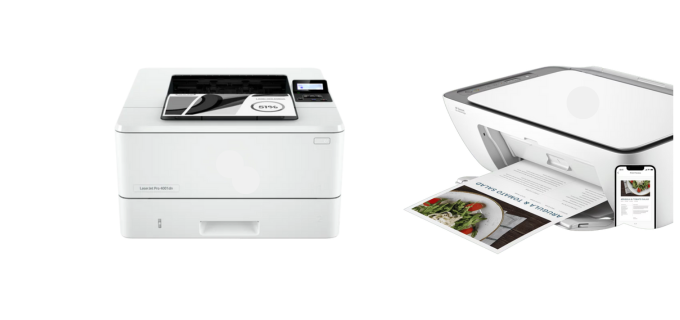

We're here to assist you in setting up your Printer.
Let's get your printer connected to Wi-Fi, a wired network, or your computer with a USB cable.

Help - Search - Documentation
How to Setup Your New Printer
Guide - Let's started
Setting up a new printer can feel overwhelming, especially if you’re not super tech-savvy. But don’t worry—whether you’re new to this or just need a refresher, this guide will help you get your printer set up quickly and easily. We’ll go over everything from unboxing to connecting your printer and getting it ready to use. Let’s get started!
Unboxing Your Printer
When you first receive your printer, the excitement can be palpable. However, before you start printing documents, it's crucial to ensure you've set everything up correctly. Here’s what you need to do:
Check the Contents:
The printer unit
Power cord
USB cable (optional for some models)
Starter ink cartridges
User guide
Installation CD (if applicable)
Placement Matters:
Accessibility: Ensure there's enough space to open the paper tray and reach ports easily.
Ventilation: Place it in an area with proper airflow to prevent overheating.
Proximity: Position it close to your computer or router if you are setting up a wireless connection.
Connecting Your Printer
Now that your printer is unboxed and properly placed, it’s time to connect it. Follow these instructions based on your connection preference.
Wired Connection
Plug in the Power: Connect the power cord to your printer and an electrical outlet. Turn on your printer.
Connect USB Cable: Plug one end of the USB cable into your printer and the other end into your computer.
Install Software: Most printers will prompt an installation process when connected. If not, you can download the necessary drivers from the website.
Wireless Connection
Turn on the Printer: Make sure your printer is powered on.
Connect to Wi-Fi: Access your printer's control panel, usually through a touch screen or function keys, then:
Select Network Settings
Choose Wireless Setup Wizard
Select your Wi-Fi network and enter the password when prompted.
Install Software on Your Computer: Download the Smart app or go to the support page to download the necessary software to complete the connection on your device.
Installing Ink and Paper
Installing Ink Cartridges
Open the Printer: Gently lift or open the lid/separate section to access the cartridge slot.
Insert Cartridges: Remove packaging from the cartridges, align them correctly according to color coding, and insert them into the slots until they click securely.
Close the Lid: Ensure all components are tightly secured to avoid any damage.
Loading Paper
Select Paper Type: Identify the right paper for your printing needs (A4, letter, photo paper, etc.).
Load Paper Tray: Adjust the paper guides and stack the paper in the tray. Make sure it isn’t overfilled to prevent jams.
Check Settings: In your printer settings, confirm the paper type and size are set correctly.
Testing Your Printer
Before diving into your projects, it’s a good idea to perform a test print to ensure everything is functioning as it should.
Print a Test Page
Access Printer Settings: Go to your computer's printer settings or the Smart app.
Select Print Test Page: This feature is usually found in the maintenance or utilities section.
Review Quality: Check the print for quality issues or missing colors. If anything looks off, double-check the ink installation.
Troubleshooting Common Issues
Even the best technology can have hiccups during setup. Here are some common problems and how to resolve them:
Printer Not Connecting
Check Wi-Fi: Ensure your printer is connected to the same network as your device.
Restart Devices: Sometimes, simply rebooting your printer and router can solve connectivity issues.
Poor Print Quality
Clean Printheads: Most printers have an option to clean the print heads through the printer maintenance settings.
Replace Inks: If colors are faded or missing, ensure your ink cartridges are still full and correctly installed.
Error Messages
Consult the Manual: Often, your printer’s user guide will contain a troubleshooting section for error codes.
Online Resources: The Support Community is an excellent platform for finding solutions to common issues.
Conclusion
Setting up your new printer doesn’t have to be a frustrating experience. By following these steps, you can streamline the process and ensure your printer is ready for use. Remember, it’s always a good idea to refer to your specific printer’s manual as features can vary by model.
If you've successfully set up your new printer today, go ahead and print that first document with pride! Have more questions or need further assistance? Don’t hesitate to reach out in the comments or consult support resources. Happy printing!